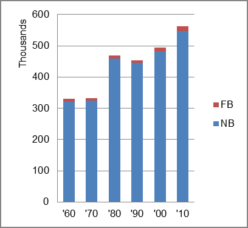

The foreign-born (FB) population increased from 9,663 in 1960 to 15,843 in 2010. That was an increase of 64.0 percent. The foreign-born share decreased from 2.9 percent in 1960 to 2.8 percent.
The share of the overall population that was native-born (NB) increased by 71.0 percent.
Wyoming: Population 1960-2010 
The first chart below shows the three population change factors for three periods adjusted for annual average amounts. The largest factor contributing population was B-D in all periods.
The second chart shows the same data but with an adjustment to reflect births to immigrants shifted to NIM. In it, B-D remained the principal factor in population increase.
Wyoming: Sources of Population Change 1990-2013 Wyoming: Sources of Population Change (Adjusted) 1990-2013
B-D NDM NIM B-D NDM NIM 90-'99 93.2% neg. 6.8% 90-'99 86.9% neg. 13.1% 00-'09 51.6% 42.2% 6.2% 00-'09 46.7% 42.2% 11.1% 10-'13 53.3% 40.8% 5.8% 10-'13 47.8% 40.8% 11.3%